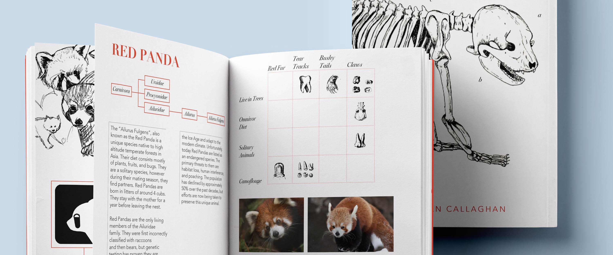
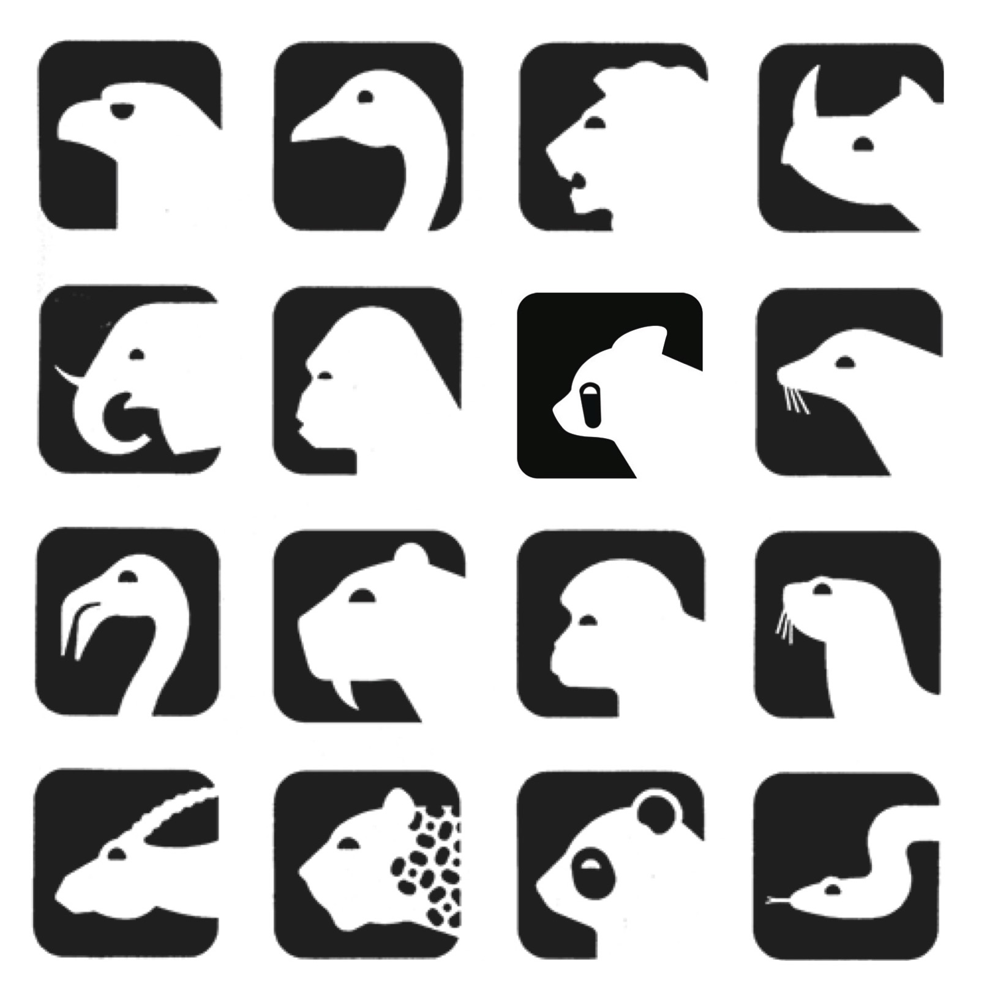

Red Panda Icon
PANDA ICON
The goal of this project was to create a new animal icon which fit seamlessly into the existing symbol set for the Washington National Zoo. I started the process by studying the important design features of the symbol set and then used those elements to design my new icon.
PROCESS BOOK
The second part of the project was to create a process book which documented the whole creation process.